以下是可以在118.178.111.167 23333端口使用的先行卡的列表。下载补丁后即可使用。
使用方法：原版游戏下载补丁后解压至游戏文件夹，YGOMobile请自定义数据库（方法请查看压缩包内使用说明），暂不保证对其他版本的支持。
资料来源：任天堂世界论坛。
脚本作者：ygopro-pre-script，YGOPRO。目前所有脚本来自于以上这2个项目，在此对各自的贡献者表示感谢。
版权声明：转载请注明出自本页面，并完整保留附带的使用说明文档。如果您想对本项目进行修改，请移步这里，但我们建议您直接参与官方项目ygopro-pre-script。
星星和加号图标是Yusuke Kamiyamane的作品。
更新记录
- 2016-10-21 20:34
- 新卡：DBLE新卡4张，20AP新卡4张，SPFE新卡2张，INOV-EN新卡4张。
- 2016-10-17 14:14
- 修复：召唤兽 梅尔卡巴未被标记为「召唤兽」卡的问题。
- 2016-10-17 14:08
- 新卡：召唤兽 梅尔卡巴。
- 更新：删除已经正式更新的卡。
- 更新：优化部分卡图，更新部分译名。
- 修复：秘旋谍度假村基地发动效果后被破坏效果仍有效的问题。
- 2016-10-15 16:03
- 修复：河伯反转效果不能在伤害步骤发动的问题。
- 修复：迷途风不能在伤害步骤发动的问题，和不能以已经被无效的怪兽为对象的问题。
- 2016-10-14 20:22
- 修复：妖精传姬-辛德瑞拉应仅限制魔法卡的效果不能以怪兽为对象。
- 2016-10-14 11:09
- 修复：补全新卡列表中遗漏的秘旋谍任务 - 强袭。
- 修复：捕食植物 猪笼草翼龙变更等级效果无效的问题。
- 2016-10-13 20:46
- 新卡：疾行机人 超车手滑翔机、红龙机。
- 更新：水晶机巧-中枢大蛇的同调处理。
- 修复：捕食植物 猪笼草翼龙无法使用的问题。
- 2016-10-12 00:58
- 更新：优化部分卡图。
- 修复：娱乐伙伴 返回狸灵摆效果无法发动的问题。
- 2016-10-10 02:28
- 新卡：秘旋谍任务 - 强袭。
- 修复：秘旋谍 策划专家遗言效果无法发动的问题。
- 修复：娱乐伙伴 奇人飞剑手能回收和丢弃「娱乐伙伴」魔法·陷阱卡的问题。
- 修复：花札卫-樱上幕帘-在不能特殊召唤场合也能发动的问题。
- 2016-10-09 20:54
- 新卡：秘旋谍 策划专家、秘旋谍的手段。
- 修复：娱乐伙伴 逗乐家遗言效果无法发动的问题。
- 修复：终端世界二代无法发动的问题。
- 2016-10-09 00:37
- 更新：十二阵·签订的译名。
- 修复：花札卫-樱上幕帘-在不能抽卡的场合也能发动的问题。
- 修复：风魔女-水晶钟不能被奇迹同调融合的问题。
- 修复：札再生没有把卡加入手卡也能特殊召唤的问题。
- 2016-10-08 18:54
- 修复：幻创之混种恐龙发动免疫效果后报错的问题，不能免疫魔法·陷阱卡的效果的问题待后续修复。
- 修复：风魔女-水晶钟不能融合召唤的问题。
- 修复：古代的机械苏生特殊召唤的不受效果影响的怪兽不上升攻击力的问题。
- 修复：对调英雄发动后报错的问题。
- 2016-10-08 10:12
- 更新：邻家割草的译名。
- 修复：节拍器地精灵的效果文。
- 2016-10-08 10:04
- 修复：降龙之魔术师变成龙族的效果应随着效果无效而消失。
- 修复：真龙皇 利托斯阿齐姆·灾祸应为除外额外卡组3种类各1张。
- 修复：河伯应能以灵魂怪兽为对象发动效果。
- 修复：超级量子必杀 阿尔方球应不能在对方没有额外卡组或不能特殊召唤的场合发动。
- 修复：通向魂源的影劫回归在结束阶段未使对象怪兽变成里侧表示的场合，下个结束阶段应再次使对象怪兽变成里侧表示。
- 修复：对调英雄在有怪兽不能转移控制权的场合应不能发动，有怪兽不受陷阱卡效果影响的场合应不处理。
- 2016-10-08 00:13
- 更新：迷途风的译名。
- 2016-10-08 00:00
- 新卡：RATE(911)全卡已更新。
- 更新：优化部分卡图。
- 修复：部分卡片提示显示为问号的问题。
- 2016-10-07 20:30
- 修复：召唤魔术不把场上的怪兽除外的问题。
- 修复：真龙皇 利托斯阿齐姆·灾祸除外额外卡组效果错误的问题。
- 2016-10-07 12:31
- 新卡：寄生融合虫、花札卫-樱上幕帘-、真龙皇 利托斯阿齐姆·灾祸、灵魂鸟、见习魔笛使、迷惑风等新卡7张。
- 2016-10-06 23:55
- 修复：捕食花盆能召唤4星以上怪兽的问题。
- 2016-10-06 23:48
- 修复：召唤兽 埃律西昂效果发动时报错的问题。
- 修复：札再生不能把怪兽特殊召唤的问题。
- 2016-10-06 21:36
- 修复：天地开辟效果错误的问题。
- 2016-10-06 21:26
- 修复：炼狱的狂宴无法发动的问题。
- 2016-10-06 21:15
- 更新：优化部分卡图。
- 修复：强欲毒融合龙无法使用的问题。
- 修复：札再生发动后送入墓地时报错的问题。
- 修复：天地开辟效果无效的问题。
- 2016-10-06 20:19
- 新卡：强欲毒融合龙、召唤兽、迷人的度假村服务员、炎神-不知火、札再生、灵兽的誓还、天地开辟、炼狱的狂宴等新卡11张。
- 修复：霸王烈龙 异色眼烈火龙里侧表示被破坏也能发动效果的问题。
- 2016-10-04 20:46
- 新卡：吞食百万的暴食兽。
- 修复：十二兽 兔铳和羊冲能无效自己的魔法·陷阱卡的问题。
- 2016-10-04 13:21
- 修复：白骨公主不下降守备力的问题。
- 修复：超战士的萌芽部分情况下效果无效的问题。
- 2016-10-04 00:52
- 修复：超战士的萌芽不能把墓地的混沌战士仪式召唤的问题，修复在没有合适的素材时也能发动的问题，修复发动被无效后当回合不能再次发动同名卡的问题。
- 2016-10-03 22:44
- 新卡：超战士的萌芽。
- 更新：优化部分卡图。
- 2016-10-03 13:47
- 修复：花札卫-五光-直接攻击时报错的问题。
- 2016-10-03 04:54
- 新卡：创星神 提耶拉、灵魂鸟神-姬孔雀、花札卫-五光-、威风妖怪突风。
- 修复：电子化芭蕾练习裙在场上没有格子的场合也能解放手卡怪兽的问题。
- 修复：灵魂鸟神-彦孔雀将卡片回到手牌后没有格子时也提示特殊召唤的问题。
- 2016-10-02 13:37
- 修复：白骨公主堆墓效果无效的问题。
- 2016-10-02 04:53
- 新卡：白骨公主、捕食植物 茅膏菜伞蜥、混沌的使者、重装甲列车 铁狼。
- 更新：十二兽怪兽发动效果时向对方展示发动了哪个效果。
- 修复：捕食花盆能召唤4星以上怪兽的问题。
- 修复：灵魂鸟-巫鹤通常召唤和特殊召唤能各抽一次卡的问题。
- 修复：灵魂的圆环在被直接攻击时翻开除外对方墓地灵魂怪兽发动效果的问题。
- 修复：十二阵·生肖能用魔法·陷阱卡代替破坏的问题，和代替破坏次数无限的问题。
- 2016-09-29 23:14
- 修复：十二阵·生肖报错的问题。
- 2016-09-29 21:57
- 新卡：十二兽新卡3张、捕食植物新卡2张、横纲犬、娱乐伙伴 返回狸。
- 2016-09-28 11:05
- 修复：十二兽 蛇笞的攻击力·守备力。
- 修复：古代的机械苏生会使不受效果影响的怪兽上升攻击力的问题。
- 2016-09-28 01:40
- 修复：十二兽 猪弓不能直接攻击的问题。
- 2016-09-28 00:00
- 新卡：幻创之混种恐龙、十二兽新卡8张。
- 2016-09-25 22:14
- 新卡：愚蠢的副葬。
- 修复：电子化芭蕾练习裙不能解放手卡怪兽特殊召唤的问题。
- 2016-09-24 22:27
- 更新：删除已经正式更新的卡。
- 2016-09-23 22:15
- 新卡：电子化芭蕾练习裙、十二兽 德兰西娅、通向魂源的影劫回归、太空直线加速赛车。
- 2016-09-22 10:21
- 修复：灵魂鸟神-彦孔雀回到手卡效果在部分情况下无法发动的问题，修复提示显示为问号的问题。
- 2016-09-21 23:31
- 新卡：古代的机械混沌巨人、灵魂的据所、河伯、影之卡组破坏病毒。
- 更新：优化部分卡图。
- 2016-09-20 19:16
- 修复：古代的齿车机械攻击时会使魔法·陷阱卡的效果也不能发动的问题。
- 修复：古代的机械合成龙会使古代的机械怪兽被攻击时对方也不能发动效果的问题。
- 修复：古代的机械苏生效果只能使用1次的问题。
- 修复：不知火流 轮回之阵1效果应为除外怪兽。
- 2016-09-19 17:11
- 新卡：近期VJ与官推公布新卡共13张。
- 2016-09-12 02:10
- 新卡：古代的机械猎犬、古代的机械要塞。
- 更新：优化部分卡图。
- 2016-09-08 21:24
- 新卡：古代的机械要塞、幻想之见习魔导师。古代的机械要塞暂未确认。
- 2016-09-05 23:44
- 修复：精灵兽使 薇茵妲的字段。
- 2016-09-05 23:38
- 新卡：精灵兽使 薇茵妲。
- 更新：优化部分卡图。
- 2016-09-03 22:28
- 新卡：水晶机巧-黑晶、水晶机巧-柠晶龙。
- 修复：超重忍者 忍足-A·C在准备阶段被破坏不发动效果的问题。
- 2016-08-28 20:53
- 新卡：超重忍者 忍足-A·C。
- 修复：光波异邦臣不能在手卡发动的问题。
- 修复：参考最终一战！的调整，超级量子必杀 阿尔方球应能在对方没有怪兽可特殊召唤的场合发动。
- 修复：光波分光部分情况下不能发动的问题。
- 2016-08-24 22:04
- 新卡：超级量子必杀 阿尔方球。
- 更新：优化部分卡图。
- 2016-08-22 00:33
- 修复：风魔女-冰铃在场上有怪兽的场合也能特殊召唤的问题。
- 2016-08-21 21:34
- 修复：风魔女-冰铃额外卡组特殊召唤限制无效的问题。
- 更新：删除已经正式更新的卡。
- 2016-08-21 13:13
- 修复：疾行机人 OMK口香糖不能增加攻击力的问题。
- 2016-08-20 21:27
- 修复：疾行机人 竹马高跷②效果无法使用的问题。
- 2016-08-20 20:07
- 修复：补全新卡列表。
- 2016-08-20 19:05
- 新卡：疾行机人 竹马高跷、风魔女-冰铃、光波分光。
- 2016-08-18 21:06
- 修复：超银河眼光波龙只能获取1只怪兽控制权的问题。
- 修复：疾行机人 OMK口香糖同调召唤效果应为战斗阶段任意时点发动。
- 2016-08-18 02:01
- 修复：降龙之魔术师加倍攻击力效果无效的问题。
- 修复：风魔女-雪铃从手卡特殊召唤效果无效的问题。
- 修复：勇猛眼灵摆龙无法使用的问题。
- 修复：古代的机械飞龙应为检索「古代的机械」卡，修复发动后可以把魔法·陷阱卡盖放的问题。
- 修复：部分效果提示不显示的问题。
- 2016-08-17 21:37
- 新卡：VJMP新卡共11张。
- 更新：删除已经正式更新的卡。
- 2016-08-03 22:45
- 修复：部分卡发动时的提示显示为问号的问题。
- 更新：更改部分卡名，优化部分卡图。
卡片列表
| 卡图 | 卡名 | 效果 |
|---|---|---|
| 疾行机人 超车手滑翔机 | [怪兽|效果|灵摆] 机械/风 [★5] 2200/2000 3/3 ←3 【灵摆】 3→ ①：1回合1次，从手卡以及自己场上的表侧表示怪兽之中把1只「疾行机人」调整送去墓地才能发动。直到回合结束时，这张卡的灵摆刻度上升或者下降送去墓地的那只怪兽的原本等级数值（最少到1）。 【怪兽效果】 「疾行机人 超车手滑翔机」的①的方法的特殊召唤1回合只能有1次。 ①：双方场上没有怪兽存在的场合，这张卡可以从手卡特殊召唤。 ②：这张卡上级召唤成功时，以自己墓地1只4星以下的「疾行机人」怪兽为对象才能发动。那只怪兽特殊召唤。 ③：只要这张卡在怪兽区域存在，对方不能选择其他的「疾行机人」怪兽作为攻击对象。 | |
 | 调弦之魔术师 | [怪兽|效果|调整|灵摆] 魔法师/暗 [★4] 0/0 8/8 ←8 【灵摆】 8→ ①：只要这张卡在灵摆区域存在，自己场上的怪兽的攻击力·守备力上升自己的额外卡组的表侧表示的「魔术师」灵摆怪兽种类×100。 【怪兽效果】 这张卡不能作从额外卡组的特殊召唤，把这张卡作为融合·同调·超量召唤的素材的场合，其他素材必须全部是「魔术师」灵摆怪兽。「调弦之魔术师」的怪兽效果1回合只能使用1次。 ①：这张卡从手卡的灵摆召唤成功时才能发动。从卡组把「调弦之魔术师」以外的1只「魔术师」灵摆怪兽守备表示特殊召唤。这个效果特殊召唤的怪兽的效果无效化，从场上离开的场合除外。 （注：效果暂未完全实现，目前此卡可以用任意素材进行融合·超量召唤） |
 | 疾行漂移 | [魔法|速攻] ①：自己场上的怪兽只有调整1只的场合才能发动。从卡组把1只4星以下的「疾行机人」怪兽特殊召唤。在那只怪兽的特殊召唤成功时，双方不能让魔法·陷阱·怪兽的效果发动。 |
 | 固定音型 | [魔法] ①：自己场上没有怪兽存在的场合才能发动。从自己的手卡·卡组把「幻奏」融合怪兽卡决定的2只融合素材怪兽送去墓地，把那1只融合怪兽从额外卡组融合召唤。这个回合的结束阶段，这个效果融合召唤的怪兽破坏，若那一组融合素材怪兽在自己墓地齐集，可以把那一组特殊召唤。 |
 | 风魔女-玻璃铃 | [怪兽|效果|调整] 魔法师/风 [★4] 1500/1500 「风魔女-玻璃铃」的效果1回合只能使用1次。 ①：这张卡召唤·特殊召唤成功的场合才能发动。从卡组把「风魔女-玻璃铃」以外的1只「风魔女」怪兽加入手卡。这个效果的发动后，直到回合结束时自己不是风属性怪兽不能特殊召唤。 |
 | 毁灭咒文-死亡终极咒 | [魔法|速攻] ①：自己场上有8星以上的魔法师族怪兽存在的场合才能发动。选场上1张卡里侧表示除外。 ②：魔法与陷阱区域的这张卡被对方的效果破坏的场合才能发动。从卡组把1只「黑混沌之魔术师」或者「混沌之黑魔术师」无视召唤条件特殊召唤。 |
 | 鹰身女妖的羽毛吹雪 | [陷阱] 自己场上有「鹰身」怪兽存在的场合，这张卡的发动从手卡也能用。 ①：自己场上有鸟兽族·风属性怪兽存在的场合才能发动。直到回合结束时，对方发动的怪兽的效果无效化。 ②：魔法与陷阱区域的这张卡被对方的效果破坏的场合才能发动。从自己的卡组·墓地选1张「鹰身女妖的羽毛扫」加入手卡。 |
 | 元素英雄 真诚新宇侠 | [怪兽|效果] 战士/光 [★7] 2500/2000 8/8 「元素英雄 真诚新宇侠」的①②的效果1回合各能使用1次，对方回合也能发动。 ①：把这张卡从手卡丢弃，以场上1只「英雄」怪兽为对象才能发动。那只怪兽的攻击力直到回合结束时上升2500。 ②：从手卡丢弃1只「元素英雄」怪兽才能发动。这张卡的攻击力直到回合结束时上升丢弃的怪兽的攻击力数值。 |
 | 力量之壁 | [陷阱] ①：对方怪兽的攻击要让自己受到战斗伤害的伤害计算时才能发动。直到那次战斗发生的对自己的战斗伤害变成0为止把每500伤害1张卡从自己卡组上面送去墓地。 |
| 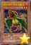 | 捕食植物 猪笼草翼龙 | [怪兽|效果] 植物/暗 [★3] 300/2100 ①：这张卡给与对方战斗伤害时，以对方场上1只表侧表示怪兽为对象才能发动。给那只怪兽放置1个捕食指示物。有捕食指示物放置的2星以上的怪兽的等级变成1星。 ②：1回合1次，以持有这张卡的等级以下的等级的对方场上1只怪兽为对象才能发动。那只怪兽的控制权直到结束阶段得到。 |
| 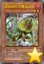 | 捕食植物 茅膏菜伞蜥 | [怪兽|效果] 植物/暗 [★2] 600/200 「捕食植物 茅膏菜伞蜥」的②的效果1回合只能使用1次。 ①：只要这张卡在怪兽区域存在，自己要作为融合素材的有捕食指示物放置的怪兽的属性当作暗属性使用。 ②：自己主要阶段才能发动。暗属性融合怪兽卡决定的包含场上的这张卡的融合素材怪兽从自己的手卡·场上以及对方场上的有捕食指示物放置的怪兽之中选出送去墓地，把那1只融合怪兽从额外卡组融合召唤。 （注：①效果暂时无法实现，目前的处理是直接更改那些怪兽的属性） |
| 捕食植物 奇美拉大花草 | [怪兽|效果|融合] 植物/暗 [★7] 2500/2000 「捕食植物」怪兽＋暗属性怪兽 ①：1回合1次，以持有这张卡的等级以下的等级的场上1只怪兽为对象才能发动。那只怪兽除外。 ②：这张卡和对方的表侧表示怪兽进行战斗的攻击宣言时才能发动。直到回合结束时，那只对方怪兽的攻击力下降1000，这张卡的攻击力上升1000。 ③：这张卡被送去墓地的场合，下次的准备阶段才能发动。从卡组把1张「融合」魔法卡加入手卡。 | |
| 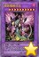 | 强欲毒融合龙 | [怪兽|效果|融合] 龙/暗 [★10] 3300/2500 「捕食植物」怪兽＋原本等级是8星以上的暗属性怪兽 这张卡用融合召唤才能从额外卡组特殊召唤。 ①：1回合1次，以场上1只表侧表示怪兽为对象才能发动。直到回合结束时，那只怪兽的攻击力变成0，效果无效化。 ②：这张卡被破坏送去墓地的场合发动。场上的怪兽全部破坏。那之后，可以把自己墓地1只8星以上的暗属性怪兽除外把这张卡从墓地特殊召唤。 |
| 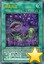 | 捕食花盆 | [魔法|永续] 这张卡的控制者在每次自己准备阶段支付800基本分。或者不支付基本分让这张卡破坏。 ①：1回合1次，自己主要阶段才能发动。从自己的手卡·墓地选1只4星以下的「捕食植物」怪兽特殊召唤。这个效果特殊召唤的怪兽的效果无效化。 |
| 毛绒动物·章鱼 | [怪兽|效果] 天使/水 [★1] 800/800 「毛绒动物·章鱼」的①②的效果1回合各能使用1次。 ①：这张卡召唤·特殊召唤成功时，以自己墓地1只「毛绒动物」怪兽或者「锋利小鬼」怪兽为对象才能发动。那只怪兽加入手卡。 ②：这张卡成为「魔玩具」融合怪兽的融合召唤的素材送去墓地的场合，以除外的最多2只自己怪兽为对象才能发动。那些怪兽回到墓地。 | |
| 魔玩具·钩乌贼 | [怪兽|效果|融合] 恶魔/水 [★8] 2200/3000 「锋利小鬼」怪兽＋「毛绒动物」怪兽 ①：1回合1次，以对方场上1只怪兽为对象才能发动。那只怪兽送去墓地。这个效果发动的回合，这张卡不能直接攻击。 ②：这张卡在同1次的战斗阶段中可以作2次攻击。 ③：这张卡进行战斗的战斗阶段结束时才能发动。这张卡变成守备表示。 | |
| 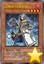 | 召唤师 阿莱斯特 | [怪兽|效果] 魔法师/暗 [★4] 1000/1800 ①：把这张卡从手卡送去墓地，以自己场上1只融合怪兽为对象才能发动。那只怪兽的攻击力·守备力直到回合结束时上升1000。这个效果在对方回合也能发动。 ②：这张卡召唤·反转的场合才能发动。从卡组把1张「召唤魔术」加入手卡。 |
| 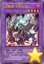 | 召唤兽 卡利古拉 | [怪兽|效果|融合] 兽/暗 [★4] 1000/1800 「召唤师 阿莱斯特」＋暗属性怪兽 ①：只要这张卡在怪兽区域存在，那个期间双方各自在1回合只能有1次把怪兽的效果发动，各自在战斗阶段只能用1只怪兽攻击。 |
| 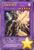 | 召唤兽 雷电 | [怪兽|效果|融合] 战士/风 [★5] 2200/2400 「召唤师 阿莱斯特」＋风属性怪兽 ①：1回合1次，以场上1只表侧表示怪兽为对象才能发动。那只怪兽变成里侧守备表示。这个效果在对方回合也能发动。 |
| 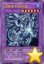 | 召唤兽 科库托斯 | [怪兽|效果|融合] 龙/水 [★6] 1000/2900 「召唤师 阿莱斯特」＋水属性怪兽 ①：这张卡不会成为对方的效果的对象，不会被对方的效果破坏。 ②：这张卡可以用表侧守备表示的状态作出攻击。那个场合，攻击力数值适用进行伤害计算。 |
| 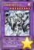 | 召唤兽 梅尔卡巴 | [怪兽|效果|融合] 机械/光 [★9] 2500/2100 「召唤师 阿莱斯特」＋光属性怪兽 ①：1回合1次，怪兽的效果·魔法·陷阱卡发动时，把和那张卡相同种类（怪兽·魔法·陷阱）的1张手卡送去墓地才能发动。那个发动无效并除外。 |
| 召唤兽 埃律西昂 | [怪兽|效果|融合] 天使/光 [★10] 3200/4000 「召唤兽」怪兽＋从额外卡组特殊召唤的怪兽 这张卡用以上记的卡为融合素材的融合召唤才能从额外卡组特殊召唤。 ①：只要这张卡在怪兽区域存在，这张卡的属性也当作「暗」「地」「水」「炎」「风」使用。 ②：1回合1次，以自己的场上·墓地1只「召唤兽」怪兽为对象才能发动。那只怪兽以及持有和那只怪兽相同属性的对方场上的怪兽全部除外。这个效果在对方回合也能发动。 | |
| 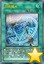 | 召唤魔术 | [魔法] 「召唤魔术」的②的效果1回合只能使用1次。 ①：融合怪兽卡决定的融合素材怪兽从手卡送去墓地，把那1只融合怪兽从额外卡组融合召唤。「召唤兽」融合怪兽融合召唤的场合，也能把自己场上以及自己·对方的墓地的怪兽除外作为融合素材。 ②：这张卡在墓地存在的场合，以除外的1只自己的「召唤师 阿莱斯特」为对象才能发动。墓地的这张卡回到卡组，作为对象的怪兽加入手卡。 |
| 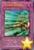 | 太空直线加速赛车 | [陷阱|永续] 把这张卡作为效果怪兽特殊召唤（机械族·调整·炎·1星·攻0/守1800）。（这张卡也当作陷阱卡使用。）只要这张卡的效果特殊召唤的这张卡在怪兽区域存在，其他的自己场上的调整怪兽不会被战斗或者对方的卡的效果破坏。 |
| 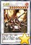 | 红龙机 | [怪兽|效果|同调] 机械/炎 [★9] 2700/1800 调整＋调整以外的怪兽1只以上 1回合1次：可以把自己的手卡·场上·墓地的1只调整除外，之后选择场上1张卡；破坏那张卡。同调召唤的这张卡被卡的效果破坏送去墓地的场合：可以选择除外的1只自己的调整；那张卡加入手卡。 |
| 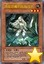 | 地底恐魔的宿敌弓手 | [怪兽|效果] 天使/地 [★3] 1600/1400 自己场上有其他的「地底恐魔」怪兽存在，这张卡向对方的里侧守备表示怪兽攻击的伤害步骤开始时：可以把那只对方怪兽回到持有者卡组。场上的这张卡被战斗或者卡的效果破坏送去墓地的场合：可以从卡组把1只「地底恐魔」怪兽表侧守备表示或者里侧守备表示特殊召唤。「地底恐魔的宿敌弓手」的每个效果1回合各能使用1次。 |
| 地底恐魔 巨魔海怪 | [怪兽|效果|反转] 海龙/地 [★5] 1400/2600 反转：可以选择自己场上的「地底恐魔」怪兽数量的场上盖放的卡；破坏那些卡。「地底恐魔 巨魔海怪」的这个效果1回合只能使用1次。自己场上的表侧表示怪兽变成里侧表示时，自己场上没有表侧表示怪兽存在的场合：可以从手卡把这张卡守备表示特殊召唤。1回合1次：可以把这张卡变成里侧守备表示。 （注：译名待定） | |
| 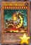 | 地底恐魔 巨魔火成岩 | [怪兽|效果|反转] 炎/地 [★12] 3000/1800 反转：可以把其他的场上的表侧表示怪兽变成里侧守备表示。「地底恐魔 巨魔火成岩」的这个效果1回合只能使用1次。自己场上的表侧表示怪兽变成里侧表示时，自己场上没有表侧表示怪兽存在的场合：可以从手卡把这张卡守备表示特殊召唤。1回合1次：可以把这张卡变成里侧守备表示。 |
| 地底恐魔 巨魔潜伏 | [陷阱] 可以把墓地的1只「地底恐魔」怪兽除外；这个回合，自己场上的里侧表示怪兽不会被卡的效果破坏，不会成为对方的卡的效果的对象。场上的这张卡被卡的效果破坏的场合：可以从卡组把1只「地底恐魔」怪兽加入手卡。可以把墓地的这张卡除外，之后选择自己场上1只「地底恐魔」怪兽；那只怪兽变成里侧守备表示。 （注：译名待定） | |
| 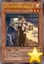 | 迷人的度假村服务员 | [怪兽|效果] 天使/光 [★3] 300/200 自己的「秘旋谍 超级特工」和对方的表侧表示怪兽进行战斗的攻击宣言时：可以把那只对方怪兽的攻击力变成0。这张卡被战斗或者卡的效果破坏的场合：可以从卡组把1只「秘旋谍 超级特工」特殊召唤。这张卡在墓地存在，自己的「秘旋谍 超级特工」被战斗破坏或者被送去墓地的场合：可以把墓地的这张卡除外；把自己墓地的1只「秘旋谍 超级特工」回到手卡。 |
| 秘旋谍 战略指挥 | [怪兽|效果] 魔法师/暗 [★7] 1200/2800 1回合1次：可以从卡组把1张「秘旋谍任务」卡加入手卡。这张卡从场上送去墓地的场合：可以从卡组把1张「秘旋谍度假村基地」和「秘旋谍 战略指挥」以外的1只「秘旋谍」怪兽加入手卡。「秘旋谍 战略指挥」的这个效果1回合只能使用1次。 （注：译名待定） | |
| 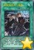 | 秘旋谍任务 - 强袭 | [魔法|永续] 这张卡在发动后第3次的自己的结束阶段时破坏。1回合1次，自己场上的「秘旋谍」怪兽战斗破坏怪兽或者自己的「秘旋谍」怪兽的效果破坏场上的卡的场合：可以从卡组抽1张卡。可以把墓地的这张卡除外；从手卡把1只「秘旋谍」怪兽特殊召唤。 |
| 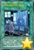 | 秘旋谍度假村基地 | [魔法|场地] 对方不能把其他的自己场上的「秘旋谍」卡作为卡的效果的对象。1回合1次：可以从卡组把1只「秘旋谍」怪兽加入手卡。1回合1次，在自己的结束阶段时，选自己墓地1只怪兽回到卡组或者破坏这张卡。 （注：译名待定） |
常见问题
Q.某张卡有BUG！
A.请到页面下方留言反馈，或联系233服QQ群里的尸体233（QQ：921439818）。
Q.卡片右下角的黄色星星是什么意思？
A.表示那张卡暂未有实卡，是先行卡。其卡片密码暂时使用临时密码（1开头的9位数）。
这种卡需要在23333端口才能使用。此外部分使用同样密码体系的服务器（不包括Checkmate）也可以使用。
实卡发售后，对应的带星星的先行卡会失效，请更新游戏，来获取正式的版本。
Q.卡片右下角的绿色加号是什么意思？
A.表示那张卡已有实卡但YGOPRO的国内官方版本暂未更新，是本补丁增加的卡片。其卡片密码是正式密码。
这种卡在233端口更新前只能在23333端口使用。但其他更新速度较快的服务器（包括Checkmate）一般也可使用。
一般这种卡不久就会正式更新到233服，请关注公告，更新后请下载YGOPRO的正式更新来获取那些卡。
Q.为什么安装了最新的先行卡补丁仍然没有某些卡？
A.本补丁只包含先行卡，不包含已经正式更新的卡。
请下载YGOPRO的正式更新来获取那些卡。
Q.为什么我更新先行卡补丁之后反而有卡消失了？
A.因为那些卡已经不再是先行卡了，本补丁不再包含它们。
请下载YGOPRO的正式更新来获取那些卡。
Q.安装后没有新卡？
A.本补丁附带新卡列表的卡组。
请确保你把文件解压到了游戏文件夹里，而不是新建了一个文件夹。
电脑版需要重启游戏才能重新载入数据库。
手机版需要自定义数据库，详见使用方法。
Q.安装后新卡没有卡图？
A.请确保你解压出来了压缩包里所有文件，不能只解压1个文件。
Q.手机版找不到sdcard文件夹？
A.部分手机可能位于storage或mnt文件夹里。
Q.手机版提示没有权限？
A.同上，换个文件夹试试。
Q.某张卡不能用，提示无效卡组？
A.本补丁的最新版只能与23333端口完美兼容。
请下载YGOPRO的正式更新，并更新先行卡补丁到最新版，把端口改为23333，才能正常使用先行卡。
Q.搜索卡片时发现有重复卡片？
A.因为本补丁是先行卡补丁，正式更新的卡片可能会与本补丁的卡片重复。删除或更新本补丁即可。
Q.电脑版怎么删除补丁？
A.删除expansions文件夹或其中pre-release.cdb即可。
Q.手机版怎么删除补丁？
A.点自定义卡片数据库下面的重置卡片数据库。
如果你打过其他的补丁，还需要再自定义一次数据库，选择cards.cdb。